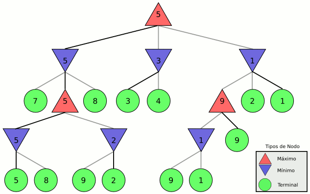
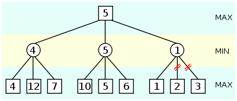
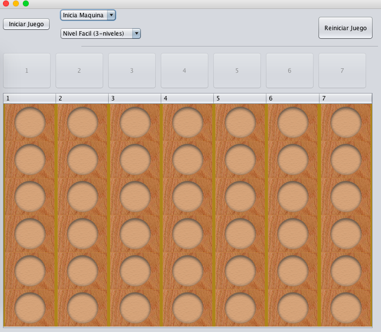
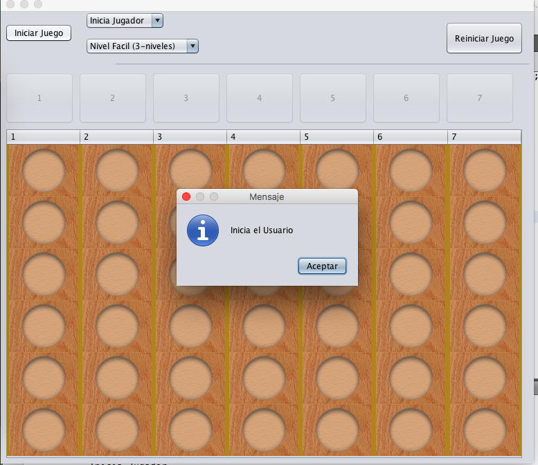
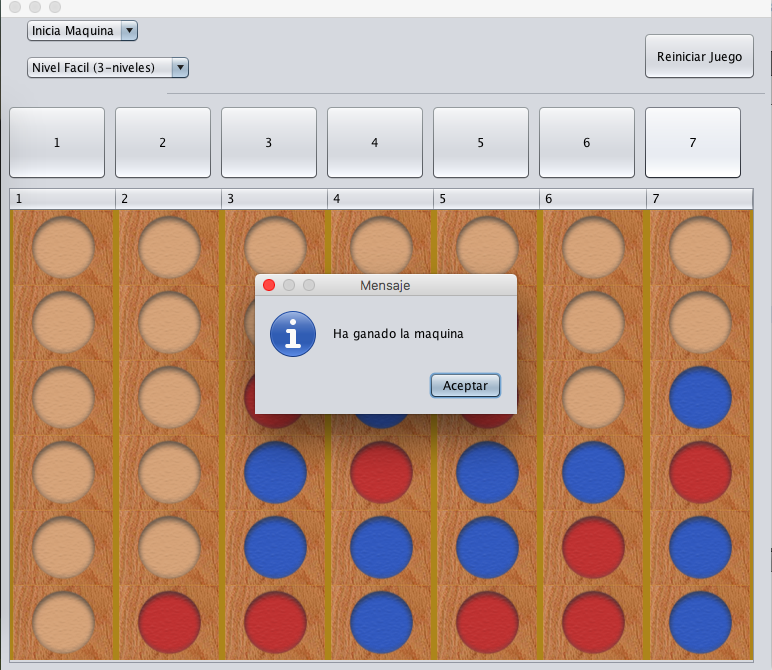

Conecta 4 (también conocido como 4 en Linea en algunas versiones) es un juego de mesa para dos jugadores. El objetivo de Conecta 4 es alinear cuatro fichas sobre un tablero formado por seis filas y siete columnas. Por turnos, los jugadores deben introducir una ficha en la columna que prefieran (siempre que no esté completa) y ésta caerá a la posición más baja. Gana la partida el primero que consiga alinear cuatro fichas consecutivas de un mismo color en horizontal, vertical o diagonal.
Conecta 4 es un juego de estrategia abstracta donde los contrincantes disponen de información perfecta. Por norma general, el primer jugador tiene más posibilidades de ganar si introduce la primera ficha en la columna central. Si lo hace en las contiguas se puede forzar un empate, mientras que si la mete en las más alejadas del centro su rival puede vencerle con mayor facilidad.
En teoría de juegos, minimax es un método de decisión para minimizar la pérdida máxima esperada en juegos con adversario y con información perfecta. Minimax es un algoritmo recursivo.
Recordemos que Connect4 es un juego con información perfecta, es decir, ambos jugadores pueden conocer en cualquier momento el estado del rival y su propio estado.
John von Neumann es el creador del teorema minimax, quien dio la siguiente noción de lo que era un juego:
Un juego es una situación conflictiva en la que uno debe tomar una decisión sabiendo que los demás también toman decisiones, y que el resultado del conflicto se determina, de algún modo, a partir de todas las decisiones realizadas.
Pasos del algoritmo minimax:
El algoritmo explorará los nodos del árbol asignándoles un valor numérico mediante una función de evaluación, empezando por los nodos terminales y subiendo hacia la raíz. La función de utilidad definirá lo buena que es la posición para un jugador cuando la alcanza.
El algoritmo minimax tiene la desventaja de generar tantos nodos por nivel como movimientos validos sean posibles en un juego, causando un gran consumo de memoria al evaluar cada posibilidad. Por ello se debe limitar a un tiempo de ejecucion o a una cantidad de niveles definida, después de 6 niveles en Connect4 la maquina juega bastante bien.
La poda alfa beta es una técnica de búsqueda que reduce el número de nodos evaluados en un árbol de juego por el algoritmo Minimax. Se trata de una técnica muy utilizada en programas de juegos entre adversarios como el ajedrez, el tres en raya o el Go.
La técnica de poda alfa-beta trata de eliminar partes grandes del árbol, aplicándolo a un árbol Minimax estándar, de forma que se devuelva el mismo movimiento que devolvería este, gracias a que la poda de dichas ramas no influye en la decisión final.
La búsqueda minimax es primero en profundidad, por ello en cualquier momento sólo se deben considerar los nodos a lo largo de un camino en el árbol.
La poda alfa-beta toma dicho nombre de la utilización de dos parámetros que describen los límites sobre los valores hacia atrás que aparecen a lo largo de cada camino.
Esta búsqueda alfa-beta va actualizando el valor de los parámetros según se recorre el árbol. El método realizará la poda de las ramas restantes cuando el valor actual que se está examinando sea peor que el valor actual de α o β para MAX o MIN, respectivamente.
Para poder utilizar el Connect4 utilizamos una matriz de 7x6, que utilizaba valores enteros para denominar quien ocupaba la casilla.
Utilizamos funciones para asignar un valor a cada estado del Tablero. De la siguiente forma se hacia la formula.
maq_value = 10*numSet1+100*numSet2+1000*numSet3+100000*numSet4pla_value = 10*numSet1+100*numSet2+1000*numSet3+100000*numSet4tab_value = maq_value - pla_valueDonde numSet[x] indica el numero de subconjuntos de 4 elementos, donde hay exactamente x fichas del jugador correspondiente y los elementos restantes son espacios libres
Con esta informacion podiamos tomar el valor de cada nodo y utilizar el algoritmo MiniMax y después desarrollar la poda.
Para la poda Alpha-beta usamos funciones para obtener guardar el maximo en la busqueda y el minimo. y así evitar evaluar nodos que no representaban una mejor alternativa
Usando Java Swing programamos la parte visual, usando un grid e imagenes renderizadas en Photoshop, pintamos un tablero para que sea amigable con el usuario
  El tablero manda mensajes amigables y puede seleccionar al jugador inicial y la dificultad de la AI. La dificultad cambia con la profundidad del arbol, pero tambien el tiempo de procesamiento y la memoria.
Para las pruebas se modificó Java para utilizar más memoria y mayor prioridad en el Thread, evitando así Overflows de recursion.
El proyecto tuvo problemas en Common Lisp por el manejo de referencias y apuntadores, por lo que el codigo de Common Lisp tuvo que ser transcrito a Java. La dificultad para editar listas y crear nuevos estados causaba un problema al ejecutarse recursivamente. Las funciones auxiliares de Common Lisp se incluyen en el proyecto.